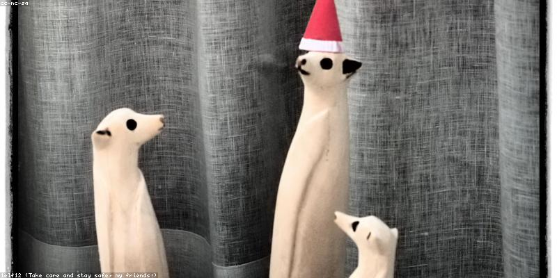

Wildlife in Peril

Climate change is one of the biggest threats to wildlife and biodiversity globally. Many species are struggling to adapt to rapidly changing temperatures and habitats.
- Polar Bears: Loss of sea ice is making it increasingly difficult for polar bears to find food and raise their young.
- Coral Reefs: Warming oceans lead to coral bleaching, which can destroy entire reef ecosystems.
- Sea Turtles: Rising sea levels are flooding nesting beaches, and higher temperatures can affect the sex ratios of hatchlings.
- Migratory Birds: Changing seasons and food availability are disrupting the timing and success of migrations.
Protecting Our Biodiversity
Protecting and restoring natural habitats like forests, wetlands, and oceans can help wildlife adapt to climate change and also help capture carbon from the atmosphere.